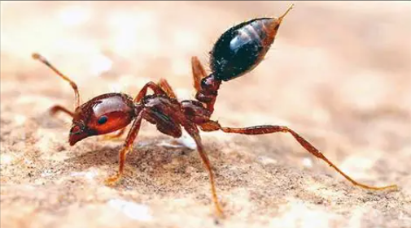
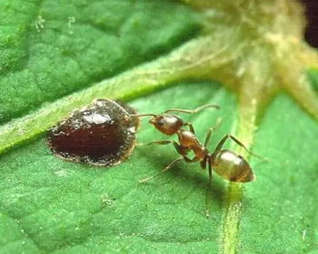

About Ants
Ants are among the most successful species on Earth, living in highly organized colonies with strict social roles and advanced communication systems. Learn about their diversity, adaptability, and unique behaviors that have inspired scientific research for decades.

Main Characteristics of Ants:
- Highly structured social hierarchy – Ant colonies operate as complex societies where each member has a clearly defined role. This hierarchy usually includes a queen responsible for reproduction, workers who maintain the nest and gather food, and soldiers who defend the colony. Such organization ensures that the colony functions like a well-oiled machine, with minimal conflict and maximum efficiency. For a deeper understanding of ant social structures, you can read this detailed overview by National Geographic .
- Incredible teamwork and division of labor – Even small colonies show emergent task specialization: as they grow, ants naturally divide into roles such as foragers, nest-builders, and caretakers. This division enhances collective intelligence and resilience. Research on harvester ants and turtle ants reveals how colonies self-organize without central control, using simple rules to coordinate complex tasks. Learn more about this phenomenon in Scientific American's exploration of ant cooperation .
- Efficient communication using pheromones – Ants primarily rely on chemical signals called pheromones to share information. These invisible scent trails guide others to food sources, warn of danger, or mark territory. Different pheromones trigger specific behaviors, such as aggression, recruitment for large tasks, or evacuation during threats. You can explore the fascinating science of ant communication in this Britannica article .
- Adaptability to different environments – Ants thrive in environments ranging from scorching deserts to urban cities and dense rainforests. Their adaptability stems from behavioral flexibility, genetic differences across habitats, and evolved physical traits (for example, heat-reflective hairs in desert species). Some species also form symbiotic relationships with plants or other insects to increase survival chances. Learn more about environmental adaptations of ants in Texas A&M University research and Wired's article on Saharan ant heat survival .
Top Common Ant Species:

Black Garden Ant (Lasius niger)
– Common across Europe, known for forming large colonies and being highly adaptable to urban environments.

Fire Ant (Solenopsis invicta)
– Aggressive species native to South America, infamous for its painful sting and invasive spread in many countries.

Argentine Ant (Linepithema humile)
– Notorious invasive species that forms supercolonies, displacing native ants and altering ecosystems.